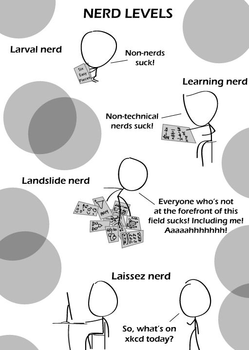

Comic JK 575
When I Feel Like It
⇤
<
?
>
⇥

⇤
<
?
>
⇥
Forum
.
RSS
.
Digg
.
Facebook
.
Reddit
.
Twitter
.
Stumbleupon
Enter your thoughts on number 575 here. Please, no spamming, trolling, phreaking, or jocks. or potato dumplings All levels of nerds still can't escape from your mother. I'm afraid the Learning Nerd is kinda right - being a nerd without some real-life skills sucks. Im a brony nerd who lives on a farm. Again, a comic that whooshed over my head, even though I (think i) understand all the defiintions. Laissez-faire = "free" economics. Laissez sounds like lazy. But what does the bottom panel have to do with economics? >Not quite; "Laissez-faire" is an adjective modifying "economics" - it has nothing to do with economics per se; it's just French for "let do", i.e., let people do what they think is best. A Laissez nerd doesn't worry over whether those people suck or not. Oh, and "Laissez" also starts with 'L'. My nerd level is now higher. YAY! > Ding! So, you're saying nerd = arrogant prick? >"Arrogant prick" is a cop-out for when the person to whom you're referring is right and you have no other way to respond. So, yeah, pretty much. >> ... or maybe it has to do with attitude and presentation >>> Concern troll is concerned. Pffft, "Lesbesgue integration". Only sissies know what THAT is! You had me at lesbian. >You ha ME at It's simple: after 35, a nerd becomes more tolerant and forgiving.